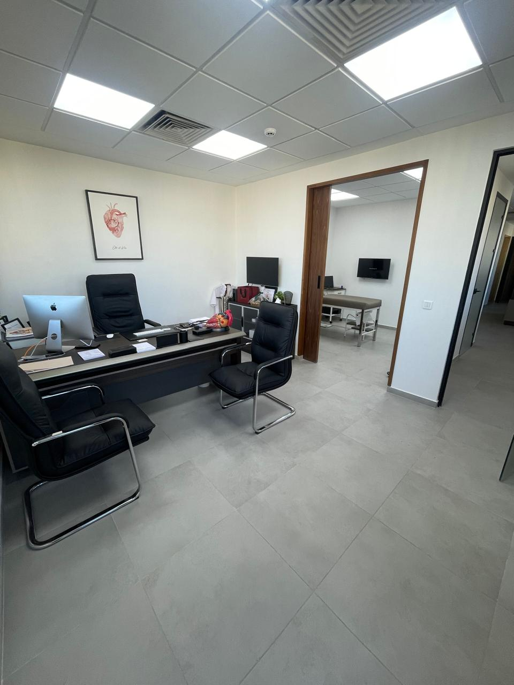
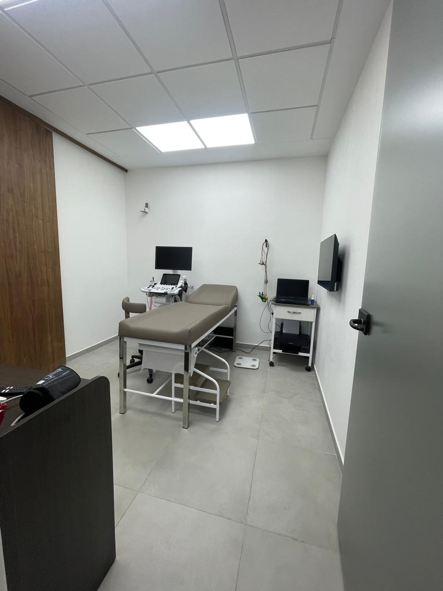
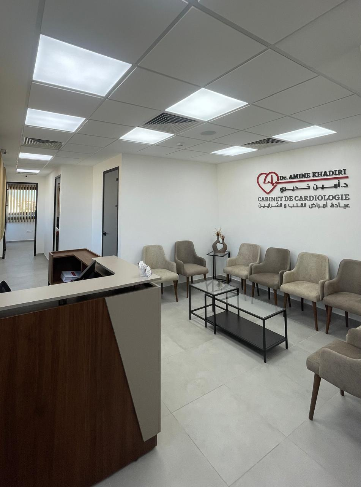

119, Bd Moulay Driss 1ᵉʳ, 5ᵉ étage, Nr 9, Quartier Des Hôpitaux, 2 Mars, Casablanca – ☎ 0522 86 35 86 / 06 45 86 35 86 – ✉ drkhadiricabinet@gmail.com
Votre cœur entre de bonnes mains
Bienvenue sur le site du Dr Amine Khadiri, cardiologue à Casablanca. Suivi complet, prévention, examens et accompagnement sur mesure pour toutes les pathologies cardiovasculaires.
À propos
Je suis le Dr Amine Khadiri, spécialiste en cardiologie, formé dans les meilleures institutions universitaires, avec une solide expérience hospitalière et libérale. Passionné par les sciences cardiovasculaires, je mets un point d'honneur à offrir une prise en charge individualisée, bienveillante et basée sur les dernières recommandations médicales.
J'accorde une grande importance à la prévention et à l’éducation du patient. Grâce à des outils modernes et à une écoute attentive, je vous accompagne dans toutes les étapes de votre parcours de soin, du dépistage aux traitements complexes.
Nos Services Cardiologiques
Des examens de pointe et un accompagnement de qualité pour chaque étape de votre santé cardiaque.
🩺 Consultation Cardiologique
Évaluation personnalisée des symptômes cardiaques et dépistage des maladies cardiovasculaires.
🫀 Échographie Cardiaque
Visualisation des structures du cœur : valves, cavités, flux sanguins.
📈 Holter ECG & TA
Enregistrement continu du rythme cardiaque ou de la pression artérielle sur 24h.
🚴♂️ Test d’effort
Évaluation de la tolérance à l'effort et recherche d'ischémie cardiaque.
🔬 Écho de stress
Simulation d’un effort pour détecter des anomalies non visibles au repos.
📝 Bilan préopératoire
Analyse du risque cardiovasculaire avant toute intervention chirurgicale.
🔄 Suivi des pathologies chroniques
Suivi rigoureux de l’insuffisance cardiaque, valvulopathies, antécédents d’infarctus.
🍏 Prévention & conseils
Programme hygiéno-diététique, arrêt du tabac, gestion du stress et activité physique.
Prise de rendez-vous
Réservez facilement votre consultation :
Blog & Conseils

Comment prévenir l’hypertension ?
Limiter le sel, pratiquer une activité physique régulière, éviter le stress chronique… des gestes simples mais puissants pour préserver vos artères !

Alimentation & cœur : les bons réflexes
Un cœur en bonne santé commence dans l’assiette : privilégiez les oméga-3, les fruits, les légumes, et évitez les graisses saturées.

Le rôle de l’activité physique
30 minutes de marche rapide par jour réduisent significativement les risques d’infarctus et améliorent la tension artérielle.

Cholestérol, tabac, stress : les ennemis silencieux
Ils agissent dans l’ombre mais multiplient les risques cardiovasculaires. Un dépistage régulier et un accompagnement adapté sont essentiels.
Ce que disent mes patients
Votre avis compte. Voici quelques témoignages de patients ayant consulté au cabinet :
- "Excellent cardiologue, très professionnel et à l'écoute. Il prend le temps d'expliquer les choses clairement." – M. El Bouzidi
- "Accueil chaleureux, diagnostics précis. Je recommande sans hésitation." – Mme Ait Lahcen
- "Après des mois d'errance médicale, le Dr Khadiri a enfin mis le doigt sur mon problème. Merci !" – Yassine B.
Vous souhaitez laisser un avis ? Cliquez ici pour écrire votre témoignage.
Questions Fréquentes (FAQ)
- Quels sont les documents à apporter pour la première consultation ?
Carte d'identité, carnet médical, anciens examens (ECG, échographies, analyses), ordonnance si traitement en cours.
- Est-ce que les consultations sont remboursées par la CNSS ou les assurances ?
Oui, une facture détaillée vous sera remise pour remboursement par votre mutuelle ou assurance.
- Combien de temps dure une consultation ?
En général entre 20 et 30 minutes selon la complexité du cas.
- Est-ce que je peux prendre rendez-vous en ligne ?
Oui, via le formulaire ci-dessus ou par téléphone/WhatsApp.
- Quels examens sont réalisés au cabinet ?
Échographie cardiaque, Holter ECG, Holter tensionnel, test d'effort, etc.
Urgences Cardiovasculaires
En cas de symptômes inquiétants tels que douleur thoracique brutale, essoufflement soudain, perte de connaissance, palpitations intenses ou œdèmes importants, il est essentiel d'agir rapidement.
Consignes :
- Appelez immédiatement le 15 (SAMU) ou rendez-vous au service d’urgence le plus proche.
- Ne pas prendre de médicament sans avis médical.
- Si vous êtes un patient suivi au cabinet, contactez-nous dès que possible pour une évaluation rapide.
Urgences couvertes :
- Syndromes coronaires aigus (infarctus, angor instable)
- Embolie pulmonaire
- Insuffisance cardiaque aiguë
- Troubles du rythme sévères
- Hypertension maligne
La prise en charge rapide peut sauver des vies. Ne perdez pas de temps en cas de doute.
Galerie photos
Découvrez le cabinet en images :



Plus de photos à venir bientôt !
💬 WhatsApp